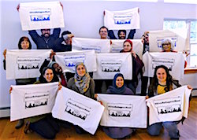
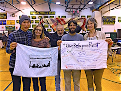

Friends,
We witnessed a huge victory yesterday in our campaign to #GiveRefugeesRest, thanks to each one of you who took action this week on behalf of refugees.
On Wednesday, the so-called "American SAFE Act" failed to pass the U.S. Senate. That's the good news -- thank you!
The bad news: 55 senators voted to support this xenophobic bill, which would have greatly tightened screening procedures on refugees. And two-thirds of House representatives voted for the original bill.
So we still have our work cut out for us -- both in Congress and also in the 31 states where governors have declared their opposition to accepting Syrian refugees.
That's why FOR is launching a new video today, asking our political and community leaders: Is this still a land of promise and opportunity? Watch the one-minute video now:
And that's why your grassroots efforts to pressure political leaders to support refugee resettlement, champion immigrant rights, and end Islamophobia are so important.
|

Pillowcase designed by a member of Bainbridge Islanders for Inclusion.

Members of the multi-faith Community of Living Traditions (CLT) with some of the 150 pillowcases they're silkscreening.

The Rev. Allison Sandlin Liles of the Episcopal Peace Fellowship, with her son, and the pillowcases they're sending to Governors Robert Bentley (AL) and Pat McCrory (NC).

FOR staffers Linda Kelly and Hope Altkin join two CLT members at Monday evening's Martin Luther King, Jr. celebration in Ramapo, NY.
|
We've seen some fabulous examples of your work in the past week
In Washington State, Bainbridge Islanders for Inclusion has combined the #GiveRefugeesRest campaign with their efforts to resist the mass deportation of Central Americans initiated by ICE at the start of 2016. Linking this campaign to their history of courageous resistance against the mass detention of Japanese Americans during World War II, their inspiring work is profiled in this great article in Yes! magazine.
In New York's Hudson Valley, the Community of Living Traditions is preparing 150 pillowcases to be sent to political leaders who have spoken out against resettling Syrian refugees. While New York's governor and senators have resisted the anti-refugee drumbeat, politicians in some municipalities -- such as the nearby city of Yonkers, home to thousands of Muslims and Middle Eastern-born families -- have been outspoken in recent calls to not welcome refugees.
The Episcopal Peace Fellowship has lifted up the #GiveRefugeesRest campaign through a national email message, and its executive director Rev. Allison Sandlin Liles is sending pillowcases to the governors of Alabama and North Carolina -- two states her family hails from, both of which are resisting Syrian refugee resettlement -- to express their commitment to the campaign.
More photos and stories can be found using the hashtag #GiveRefugeesRest on Facebook and Twitter.
Watch our new video now. And be sure to also check out our first video -- a reminder of our nation's claim to care for the tired, poor, and destitute -- which has gone viral since its release this Monday. On Facebook, thousands have watched and shared it -- you can too.
Seeking rest and human rights,
 Ethan Vesely-Flad Ethan Vesely-Flad
Director of National Organizing
Fellowship of Reconciliation
|